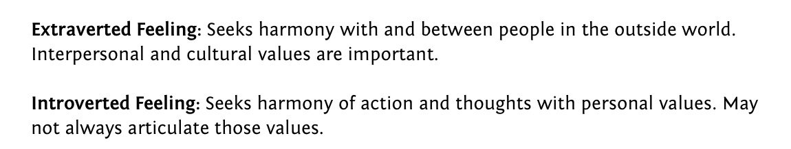

58. Wealth and Protocols
October 31, 2020
In which I use the metaphor of handshake protocols and impedance matching to argue that social harmony is only possible within a narrow logarithmic band of wealth and power, illustrating with the Friends dinner-check scene — and that most culture war problems are misdiagnosed protocol failures, not moral ones.
You can comfortably shake hands with anyone between 0.5x to 2x your height, but beyond that, it starts to get tricky. If people’s heights were in proportion to even log of their wealth, I would not be able to shake hands with Bill Gates. He’s in the 10^11 range and I’m in 10^5 🤔
Social harmony presumes more than just soft personality traits like consideration and empathy. It presumes some impedance matching for basic interactions. Handshakes are often a metaphor for technical protocols, not just social.
Like you can’t connect 5-12v dc electronics to 110-240V ac supplies without a transformer. Something would blow. A transformer is an embodied handshake protocol.
If you’ve ever socially interacted with people vastly wealthier or vastly poorer than you, you’ll notice that things break at the mechanical protocol level even before you get to seeing each other as human and practicing empathy etc.
Research (Sapolsky etc) says being at the bottom of a hierarchy is stressful, and this is true, but only within an impedance matched band. In a bank office party, a teller making 50k will experience stress talking to the investment banker making 500k. 1-point band on a log scale.
But at a log band of 2 (wealth, power or any other hierarchy variable)or higher, it’s not stressful, just plain confusing and clumsy protocol wise. And it’s not about table manners and stuff, it’s just a completely alien headspace. You look similar but are from different species.
That’s a long-winded way to a point that solving for social harmony conditions across impedance mismatched bands is not even wrong. Which is one reason I have no patience for stuff like “civil debate”. It’s all in-band stuff and fails at bands wider than 2 on a log scale.
Took me unreasonably long to see this, because I was distracted by the red herring of the ethics/morality of harmony-solving. It’s simpler than that. Harmony is a band-relative (and culture-relative, but that’s not relevant for this thread) concept. You can only solve locally.
As a Myers-Briggs INTP, I have what’s known as Fe: extroverted feeling tendencies, which makes me instinctively/unconsciously try to solve for harmony even when that’s a meaningless, counterproductive thing to do. That’s perhaps why it took me longer to see this.

Ever notice what happens when you solve for harmony across too wide an impedance band?
You get theater.
Like trying to talk to a much wealthier or poorer person about money. Your experiences of money are too far apart for harmonious discourse.
You get theater.
Like trying to talk to a much wealthier or poorer person about money. Your experiences of money are too far apart for harmonious discourse.
An example of this is the Friends episode where they go out for a nice dinner and the 3 poor friends (Joey, Rachel, Phoebe) order cheap items, the rich ones (Ross, Monica, Chandler) order pricey things, and Ross casually suggests splitting check evenly. youtube.com/watch?v=EYb9jn…
Within a band, this would be an innocent suggestion. Across 2 bands, where one group is acutely conscious of, and focused on, something the other subgroup is barely conscious of, this is a setup for harmony rupture.
But notice what broke: not table manners, but a shared sense of justice. The 3 rich friends assumed an even split was just because errors were below their indifference level.
Play this out another way. What if rich friends had tried to solve for harmony while conscious of gap?
Play this out another way. What if rich friends had tried to solve for harmony while conscious of gap?
Theater: they’d have gone to a cheap restaurant and pretended to share lower-class tastes, while the poorer friends would have either pretended not to notice.
OR:
They’d have split by what people’s orders cost, and the finicky math would have highlighted the inequality.
OR:
They’d have split by what people’s orders cost, and the finicky math would have highlighted the inequality.
OR the rich friends could have just paid for the other 3.
There is NO way to solve for harmony here that does not involve pretense/preference falsification or making mismatches legible, switching the dynamic to a status/hierarchical one (patronage, loaded gift etc)
There is NO way to solve for harmony here that does not involve pretense/preference falsification or making mismatches legible, switching the dynamic to a status/hierarchical one (patronage, loaded gift etc)
Think of society as a matrix of class and culture. Some notion of functional harmony is both possible and effective within a sing,e cell. Across 2 adjacent cells you get theater or superior/subordinate dynamics. With 3 cells band you basically get confusion.
You can do ceremonies across 3 or more bands but no real problem solving is possible beyond a theatrical pass-me-the-salt level. Again note that we’re talking fundamental breaks, not cosmetic ones like using the wrong fork or missing a cultural reference.
Cosmetic breaks are irrelevant. They make for social awkwardness and cringe, but don’t really get in the way. One side can learn the other’s culture of manners. You can fake knowledge of references. But deep protocol breaks can’t be smoothed away that way.
“Split check evenly” is a handshake that only works when people have matched standards of what amount of money is in the indifference band (modulo individual differences like a Scroogey millionaire who pinches pennies). You can’t fix it with a finishing school teaching fork use.
A huge proportion of culture war problems today are due to pretending deep protocol problems are either cosmetic or a matter of morals/ethics. Hence misdirected efforts at civil debate etc.
I’m not sure what the solution is. But it’s clear what happens when the problem is mischaracterized. You have the human social equivalents of electric arcing, short circuits, fires, etc. The best case outcome is a blown fuse and a blackout.
A useful starting point might be to distinguish 2 kinds of social mobility: life situation mobility (relocating across classes and/or cultures) versus “tourist” mobility (being able to visit/problem solve across “harmony cells” so to speak).
To be continued, I have more to say.
I included an unnecessary Myers-Briggs poison pill specifically to ward off a particular subculture of harmony seekers 🤣
The opposite of my temperament, Introverted Feeling (Fi) btw, has what they think is a solution: causing what I think of as “values scenes”
The opposite of my temperament, Introverted Feeling (Fi) btw, has what they think is a solution: causing what I think of as “values scenes”
As a Myers-Briggs INTP, I have what’s known as Fe: extroverted feeling tendencies, which makes me instinctively/unconsciously try to solve for harmony even when that’s a meaningless, counterproductive thing to do. That’s perhaps why it took me longer to see this. https://t.co/YWHiyLJSaj
MBTI language is convenient but not necessary to think this through. It has a positive side-effect of turning off statistics-rationalists
If Fe is futile harmony theater, Fi is an irregular verb: “I’m behaving with integrity, you’re moral posturing, he’s causing a useless scene”
If Fe is futile harmony theater, Fi is an irregular verb: “I’m behaving with integrity, you’re moral posturing, he’s causing a useless scene”
A “values scene” is somebody breaking a harmony theater (often accising others of hypocrisy) and strutting around causing a scene, while sermonizing about how they’re not going to compromise their integrity. It’s as futile as the harmony theater. youtu.be/Uwapf5DnUrs?t=…